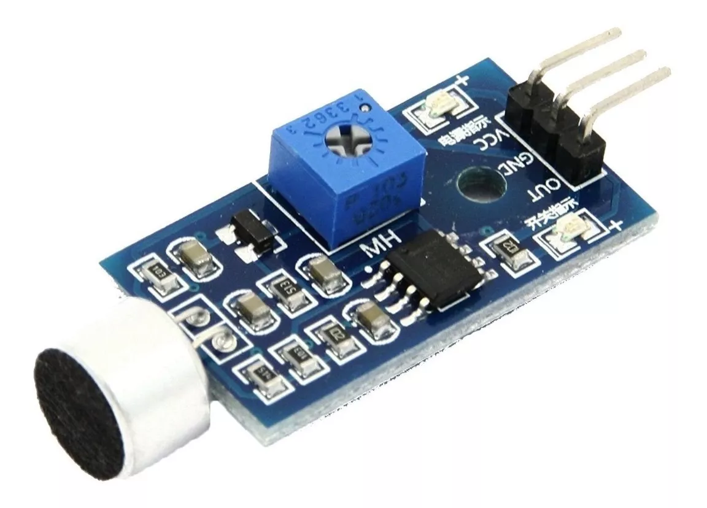
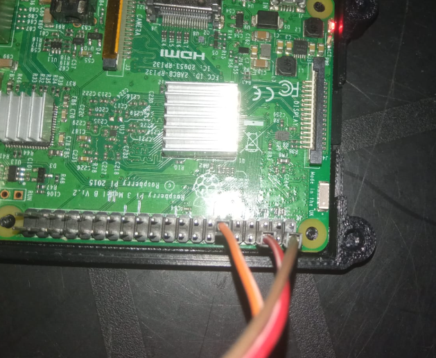
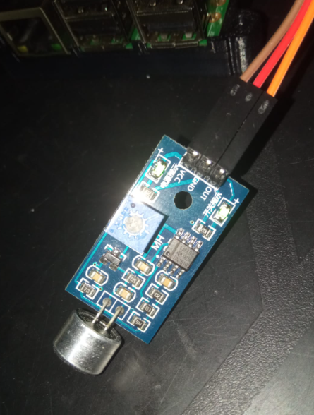

El sensor de sonido de acuerdo a como lo hayamos calibrado, detectara todo sonido, y mientras este exista se mantendrá activado, una vez el sonido cesa el sensor desactivara lo demás, puede servir para prender un led, activar la música o en este caso solo detectar la existencia del sonido
Realizado por Christopher Eduardo Barrientos Guerra